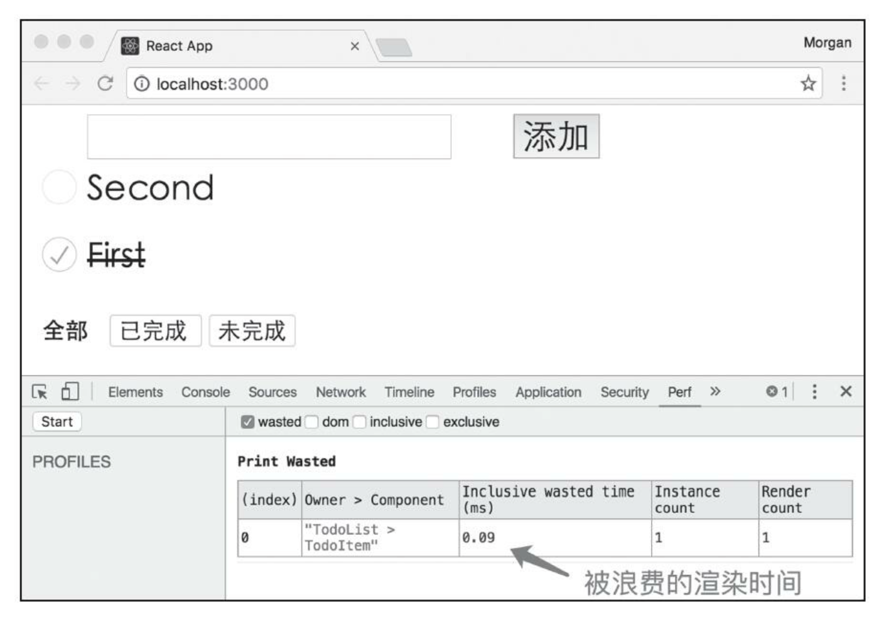
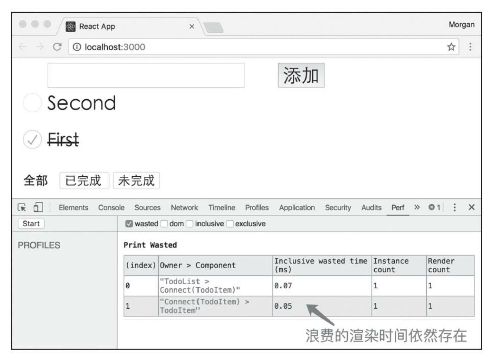

当我们要用 react + redux 构建一个应用、优化应用性能时，应该从哪些方面入手呢？
预警，这篇好长好长。
Part1：构建应用(理论)
当开始一个应用时，应该对下面几个问题进行思考。
文件组织
这个其实就是字面意思，我的多个文件，应该按照什么维度、法则去划分，书里介绍了两种——按角色组织/按功能组织，个人感觉是风格不同，但没有优劣之分。下面以 TODO App 来举例。
按角色组织呢，就是把同类的文件放到一个目录下。这种属于 MVC 带来的一种思维惯性(因为以前经常把 controller、model、view 按此方式区分)，缺点是当需要修改某功能时，需要涉及到好几个目录，不好拓展，不过我个人感觉这样的划分模式很工整，我很喜欢。
1 | reducers/ -- reducer |
按功能组织呢，就是把同功能模块的文件放到一个目录下。这种的好处是，在一般场景下，我们只会专注地改一个功能，这样就不用在多个散落的目录下查找。
1 | todoList/ |
模块接口
我们应该追求高内聚低耦合(废话)，避免让外部过于依赖内部的结构，像如果用上面按功能组织的模式划分文件的话，我们对内外部的划分就是一个功能模块了。模块直接肯定有些依赖关系，怎样设计引用接口才更高内聚低耦合呢？下面举个例子，比如 filter 模块要使用 todoList 的 action 构造函数和视图。
- bad：使用者模块直接伸手去提供者模块内拿文件
1 | import * as actions from '../todoList/actions'; |
- good：提供者模块仅通过 index 来导出内容，使用者模块也通过 index 来取内容
1 | // 导出方式 1 |
1 | // 导出方式 2 |
这里无论用哪种导出方式，只要整个项目保持一致就行了。不过可以看到第二种导出方式不可避免地要多用几行来得到 actions、reducer、view，第一种更为简单一些。
PS：额外偏题一下，这里可以发现第一句 import 和第二三句 import 不一样，这是因为我们预期 actions.js 中是按照「命名式 export」，因为 actions.js 可能会导出很多 action 构造函数，肯定不方便 export default；而对于 view 和 reducer，一个功能模块绝对只有一个根视图模块、只应该导出一个 reducer，因此它俩都是「默认式导出」。
状态树
所有状态都存在 store 上，状态树的设计，直接决定了我们要写哪些 reducer、怎么写 action，下面有一些准则。
- 一个模块控制一个状态节点
与其说是规则，不如说是 Redux 中必须遵循的、无法无视的限制。因为 Redux 中 store 中的 state 只能通过 reducer 修改，而我们每个模块都有一个 reducer，必须限制它只能修改状态树中一个节点下的 state，因为 reducer 对状态树上的修改权是「互斥的」，不可让两个 reducer 修改同一个状态树上的节点(eg. 如果 A 模块 reducer 负责修改状态树下 a 字段下的数据，那么 B 模块下的 reducer 就不可能有机会修改 a 字段下的数据)。当然啦，这里只是说修改权互斥，读取权是开放的，任何时候对任何模块都可以获取到整个状态树的数据(通过 store.getState)。
- 避免冗余数据
一般来说冗余数据是为了通过「空间换时间」来优化性能，不过相对于性能问题，数据一致性问题更加重要，因此要避免在 Redux 中有冗余数据。
- 树形结构扁平
如果树形结构深，那么就意味着结构复杂、不好维护，且访问某个变量要层层 optional chaining。
Part1：构建应用(实践)
来做一个 TODO List。
文件组织
一个 TODO List 从界面上看可以分成三个部分：todo 列表、添加 todo 的输入框和按钮、todo 筛选器。前二者关系紧密，可以划分为一个功能模块，那这样的话总共就是两个功能模块：todos、filter。这里我们实践下按照功能来组织文件：
1 | todos/ |
状态设计
首先思考下 todos，用怎样的数据结构表示一堆 todo —— 数组；用怎样的数据结构表示一个 todo —— 对象；这个对象应该包含哪些信息 —— id、文字、完成状态。
1 | { |
再来思考下 filter，一般来说我们有几个通用的筛选器：全部 todos、已完成的 todos、未完成的 todos，我们可以用一个 enum 来表示这三类筛选器，真正的 filter 和这个枚举值一一对应就行了。
1 | const ALL = 'all'; |
综合上面二者，不难得到 TODO List 的 Store 状态树大概长下面这个样子。增加一个 todo 就是往数组里新增一项，标记一个 todo 是否完成就是改一下 completed 值，要展示哪些 todo 就根据 todos 数组和 filter 字段筛选一下。
1 | { |
代码实现
应用入口
在应用的入口文件中，我们要用 Provider 包住最顶层组件，把 store 塞给 Provider。
1 | // src/index.js |
而这个顶层组件呢，要做的只是把两个关键视图给渲染出来。
1 | // src/TodoApp.js |
action
在 todos 和 filter 中都需要 actionTypes.js 和 actions.js 文件，表示对 store 的几种操作。对 store 中 todos 字段的操作有这么几种：添加、删除、修改完成状态；对 filter 字段的操作则不那么容易想，其实就是设置当前使用哪个 filter。
todos
1 | // src/todos/actionTypes.js |
1 | // src/todos/actions.js |
filter
1 | // src/filter/actionTypes.js |
1 | // src/filter/actions.js |
reducer
在 todos 和 filter 中都需要 reducer，表示对不同的 action 和 state 返回新的 state。
todos
1 | // src/todos/reducer.js |
filter
1 | // src/filter/reducer.js |
总
在之前的实践中，我们整个应用只有一个 reducer，现在我们的 TODO App 里，todos 和 filter 各有自己的 reducer，那么问题来了，Redux 的 createStore 只能接收一个 reducer，怎么办呢？
其实 Redux 提供了一个方法，可以让我们把多个 reducer 组合起来成为一个 reducer，继而实现传递给 createStore 的能力，举例如下。
1 | import { createStore, combineReducers } from 'redux'; |
这里 combineReducers 接收一个对象作为参数，这个对象的名字对应着 State 中的字段名(也就是 todos 和 filter)，这个对象的值对应着 reducer 函数(也就是 todoReducer 和 filterReducer)，返回值也是一个 reducer。
当这个新的 reducer 被执行时，会把传入的 state 参数对象拆开来处理，todos 字段下的子状态交给 todoReducer，filter 字段下的子状态交给 filterReducer，再把两个调用的返回结果合并成一个新的 state，作为整体 reducer 函数的返回结果。
现在我们再来看功能模块的 reducer，会发现 state 的值不是 Redux 中完整的状态，而是状态上对应自己的那部分。这下，每个功能模块的 reducer 都不会有冲突，无论怎么组合小的 reducer，都不用在乎它们的调用顺序，因为 Redux 就是用这种设计隔离了各个模块。
view
todos
视图最顶层如下，是一个无状态组件，我们把 todos 拆成两个组件，AddTodo 组件和 TodoList 组件。
- 顶层
1 | // src/todos/views/todos.js |
- AddTodo
AddTodo 组件涉及用户输入，当用户点击按钮或敲击回车时，我们需要从代码层面获取到 input 这个 DOM 的 value，React 通过 ref 这个东西提供了此功能，代码如下。
1 | // src/todos/views/addTodo.js |
带有 ref 属性的组件在完成装载时会检查下 ref 属性是不是函数，如果是则会调用这个函数，并把这个组件代表的 DOM 元素(not virtual DOM)作为参数传进去。向上面的例子中，input 元素的 ref 是函数，因此当 input mount 时 refInput 函数会被调用，代码如下，这里的 node 表示这个 input 元素，我们把它赋予给 this.input 了，这下就能在代码里访问它的 value 了。
1 | refInput(node) { |
这里 AddTodo 组件是一个内部组件，按理说应该是个只有 render 的傻瓜组件，但我们并没有把 onSubmit 等逻辑放到外面的容器组件中，而是之间在内部写，是为什么呢？其实是可以把它放到 mapDispatchToProps 中的，但让 AddTodo 组件外面的 mapDispatchToProps 访问到 AddTodo 组件内的 ref 很困难，得不偿失。我们要慎用 ref 来避免直接触及 DOM，要用的话也要注意别让它跨越组件边界。
对于 AddTodo，没有需要从 Redux Store 状态衍生的属性，因此我们的 connect 函数第一个参数 mapStateToProps 为 null，只用第二个参数 mapDispatchToProps 即可。src/todos/views/addTodo.js 中的 AddTodo 组件和 src/todos/views/index.js 中引入的 AddTodo 组件不一样，后者是前者用 react-redux 包裹之后的容器组件。
PS: 这里其实也可以不用 ref，用组件状态同步输入就可以了，如下
1 | // src/todos/views/addTodo.js |
- TodoList
下面是 TodoList 组件。
1 | // src/todos/views/todoList.js |
TodoList 中就涉及到 mapStateToProps 和 mapDispatchToProps 了。
1 | const selectVisibleTodos = (todos, filter) => { |
这里的 mapDispatchToProps 都遵循一样的模式：把接收到的参数作为参数传递给 action 构造函数、用 dispatch 方法把产生的 action 给 dispatch 出去。其实呢，Redux 提供了一个 bindActionCreators 方法来消除这样的重复代码，代码如下。可以看到，这里固定模式的目的是把 action 构造函数和 props 关联起来，所以可以直接以 props 名为属性名，以 action 构造函数为属性值就行了，这样就能达到简化的目的。
1 | import { bindActionCreators } from 'redux'; |
更进一步，可以直接让 mapDispatchToProps 作为 props 到 action 构造函数的映射，连 bindActionCreators 都不用了。把下面的东西传给 connect，产生的效果和之前的写法完全一样。
1 | const mapDispatchToProps = { |
- TodoItem
TodoItem 就是一个傻瓜组件，一个简单的 checkbox，点击勾选框时触发 toggle，点击叉叉时触发 remove。
1 | // src/todos/views/todoItem.js |
filter
filter 其实就三个选择，顶层一个无状态组件，具体交给 item 组件，看看具体怎么实现的。
- 顶层
1 | // src/filter/views/filter.js |
- Link
1 | // src/filter/views/link.js |
Link 的 mapStateToProps 和 mapDispatchToProps 就很简单了。
1 | const mapStateToProps = (state, ownProps) => { |
这里可以看到 mapStateToProps 有多一个参数了，第二个参数其实就是组件「非 redux 赋予的 props」，像这里 ownProps 就包含 Link 组件的 filter props。
工具使用
- React Devtools
检查 React 组件树形结构的一个 Chrome Extension。
- Redux Devtools
检查 Redux 数据流的一个 Chrome Extension。
- React Perf
可以发现组件渲染的性能问题的一个 Chrome Extension。使用上需要涉及到代码修改。
1 | import Perf from 'react-addons-pref'; |
进过上面的代码操作，就可以在控制台看到 Perf 这个 tab 了。这里之所以要把 window 赋值给 win，其实主要是为了减小代码体积。我们知道平常打包项目都会用到代码缩小器(minifer)，webpack 中的这个插件叫 UglifyJsPlugin，它会把局部变量名变成更短的变量名，但它不会去改变全局变量名，因为改变了就会影响程序的功能。所以当多次饮用 window 这样的全局变量时，最好在模块开始把 window 赋值给一个变量，在代码其他地方也用这个变量，这样压缩后的代码就只有一个无法缩小的 window 变量了。
- redux-immutable-state-invariant 包
一个 Redux 中间件(增强 Redux Store 实例功能的一种方法)，帮助开发者规范「state 不可改」这一行为。也就是在 Redux 每次派发动作后进行一次检查，如果发现某个 reducer 违反了作为一个纯函数的规定擅自修改了参数 state，就向开发者展示 warning。
使用上需要涉及到代码修改。
1 | // 使用 redux-immutable-state-invariant 和 Redux Devtools |
Part2：优化性能
单个组件的性能优化
React 自己有 virtual DOM 这个抽象，因此在页面重新渲染时，可以不渲染全部的内容，而是计算出对 DOM 树的最小修改，部分替换。不过虽然 virtual DOM 能够将每次 DOM 操作量减少到最小，计算和比较 virtual DOM 依然是一个复杂的计算过程。如果能够在开始计算 virtual DOM 之前就可以判断渲染结果不会有变化，那么可以干脆不要进行 virtual DOM 计算和比较，速度就会更快。
其实我们的 TODO List 存在一个影响性能的设计，下面详述。
分析
可以借助 React Prof 来分析，进行下面几个步骤进行分析，得到如图的分析结果。
1)添加两个待办事项，文字分别为 First 和 Second
2)打开控制台切换到Perf，勾选 wasted 选项
3)点击 React Perf 工具左侧的 Start 按钮，开始性能测量
4)勾选 Todo 应用中的 First 那一项，让它变成完成状态
5)点击 React Perf 工具左侧的 Stop 按钮，结束性能测量

React Perf 记录了 Start 和 Stop 之间的所有 React 渲染，如果组件计算 virtual DOM 之后发现和之前的 virtual DOM 相同，那就认为是一次浪费(注意这里是计算 virtual DOM 的浪费而不是访问 DOM 树的浪费)。
在这里例子中，截图里发生浪费的那一条 Owner 是 TodoList，Component 是 TodoItem，意思就是父组件 TodoList 渲染一个子组件 TodoItem 是浪费的。在整个过程中，页面上只有 First 和 Second 俩 TodoItem，First 被标记为完成状态，对应界面有改变，所以不可能有浪费；Second 没有界面改变，所以浪费只能是 Second 产生的。
时机
我们应该忘记忽略很小的性能优化，可以说 97% 的情况下，过早的优化是万恶之源，而我们应该关心对性能影响最关键的那另外 3% 的代码。 —— 高德纳
不要将性能优化的精力浪费在对整体性能提高不大的代码上，而对于性能有关键影响的部分，优化并不嫌早。举个例子，对于合并多个字符串是直接用加号还是放在数组里用 join()？不同 JavaScript 引擎和不同数量字符串的情况下性能结果有所不同，但它不会对整个应用造成关键性的影响，而选择用什么样的方式定义组件的接口、如何定义 state 到 props 的转变、用什么样的算法来对比 virtual DOM，这些才是影响巨大的那 3%。
这里浪费的 0.09ms 看似不起眼，但这只是一个 TodoItem 的浪费时间，如果有 1000 个 TodoItem，每次用户只修改一个 TodoItem 的状态，那么就会有 999 个 TodoItem 的渲染时间实际是浪费的，也就是约等于 50ms。因此还是很有必要去优化的。
实践
- 通过手写 shouldComponentUpdate
前面讲过 shouldComponentUpdate 可能是除了 render 外最重要的函数了，后者决定如何渲染，前者决定何时不需要渲染。React 组件类的父类 Component 提供了 shouldComponentUpdate 的默认实现，也就是返回 true，表示每次更新的时候都要调用所有生命周期函数，包括 render 函数，根据 render 函数的返回结果计算 virtual DOM。这个默认的实现虽然可能造成浪费，但绝对不会出错，毕竟 React 并不知道各个组件的细节，那对于熟悉组件的开发者来说，我们完全可以自己定义组件的 should ComponentUpdate，告诉它什么时候不用继续更新，借此来节省计算资源。
这里 TodoList 在重复渲染时会引发所有 TodoItem 更新，即使传递给子组件的 props 无变化，因为 TodoItem 是无状态组件，用了默认的 shouldComponentUpdate 实现。对于 TodoItem 来说，completed 和 text 无变化，就完全不用改变渲染内容，因此代码如下。
1 | shouldComponentUpdate(nextProps, nextState) { |
- 通过 react-redux 的 shouldComponentUpdate
之间举个例子吧。
1 | import React, { PropTypes } from 'react'; |
这里 Foo 是傻瓜组件，导出的结果是容器组件，connect 内部实现的过程中实际上给这个容器组件定制了 shouldComponentUpdate 方法，实现逻辑则是对比这次传递给内层傻瓜组件的 props 和上一次 props 是否一致，因为傻瓜组件的渲染完全依赖 props，props 不变渲染结果就不变。
在这里，内部傻瓜组件只有一个 text 作为 props，因此导出的容器组件中 shouldComponentUpdate 做的事情，就是判断此次渲染的 text 值和上一次的 text 值是否相同，相同就返回 false，反之返回 true。这样的话，即使 Foo 依然是无状态组件，但只要渲染 Foo 实例时，Redux Store 中对应 state 没有变化，Foo 就不会经历无意义的 virtual DOM 产生和对比过程。
同样的方法也可以应用在 TodoItem 上，不过因为 TodoItem 不用在 Store 上读取状态，因此我们的 connect 不需要任何 mapStateToProps/mapDispatchToProps 参数。这里我们使用 connect 包裹 TodoItem 的唯一目的是利用它聪明的 shouldComponentUpdate 函数。
1 | export default connect()(TodoItem); |
当我们再次测量性能数据时，会发现浪费依然存在，只不过从对象变了，是 Connect(TodoItem) 这个容器组件渲染 TodoItem 这个傻瓜组件的时候产生了浪费。

原因在于 react-redux 中 connect 内提供的 shouldComponentUpdate 在实现 props 对比时用的是浅层比较(也就是 ===)。比如下面 Foo 组件使用 react-redux 中的 shouldComponentUpdate 实现，每一次渲染时都会认为 style props 发生了变化，因为每次都会产生一个新的对象给 style，对象引用不同，自然在浅层比较下被判定为不相同。
1 | <Foo style={{ color: 'red' }} /> |
我们不能强求它做深层比较，因为对象深度不可知，递归的深层比较不光让代码复杂，还可能造成性能问题。因此我们的解决办法是，让预期一致的 props 对象指向同一个 JavaScript 对象，如下。
1 | const fooStyle = { color: 'red' }; |
回到我们的 TodoItem，为什么还是有性能浪费呢？那就要从 TodoItem 的 props 排查起了，回看上面可以发现，TodoList 给 TodoItem 传递了这么些 props，如下。其中，onToggle 和 onRemove 都给的是匿名函数，而且还都是在复制的时候产生的，也就是说每次渲染一个 TodoItem，都会产生一个新的函数，react-redux 可不会发现新函数和旧函数功能一样，它只比较引用。
1 | const TodoList = ({ todos, onToggleTodo, onAddTodo }) => { |
思考下解决办法，其实就是传递一个固定的函数，但是吧，这个函数内部使用的一个数据不一样，有点难处理(也就是第一个 TodoItem 的函数内是 onToggleTodo(0)，第二个 TodoItem 的函数内是 onToggleTodo(1)，它俩函数内不同)。
方法一，不把函数传递参数的过程放到 TodoList 那边，直接把参数的处理放到 TodoItem 中自己处理。
1 | // TodoList 里，不管参数了，多传一个 id props |
1 | // TodoItem 里，自己解决参数问题，然后调用传过来的函数，把参数传进去 |
方法二，索性直接把 TodoList 中点击事件相关 props 剔除掉，让 TodoItem 自己处理。
1 | // TodoList 里，不传函数了，多传一个 id props |
1 | // TodoItem 里，自己解决参数问题，自己声明派发 action 的函数，把参数传进去 |
两种方法都要重新定义产生 props 的 mapDispatchToProps，都要求 TodoList 传递一个 id，区别在于 actions 是由父组件导入还是组件自己导入。
多个组件的性能优化
上面的 shouldComponentUpdate 只涉及到单个组件的渲染过程，其实多个组件之间组合的渲染过程也是要考虑的，如下图，每个组件都包含众多子组件，子组件又包含子组件。

对于一个上层的组件来说，整个过程和单个组件类似，有装载阶段、更新阶段、卸载阶段。装载阶段基本没有优化空间，当组件第一次出现在 DOM 树中时，无论如何都是要彻底渲染一次的，从这个组件往下的所有组件都需要经历一次 mount；卸载阶段也没什么优化空间，无非是清理 componentDidMount 时的操作；真正的优化点在更新阶段。
这个阶段 React 具体怎么做的呢？首先装载时候 React 通过 render 得到 virtual DOM 这个树形结构，树上的每个节都都代表一个 React 组件或原生 DOM 元素；在用户进行一定交互后界面需要更新，React 依然通过 render 函数获得一个新的 virtual DOM，此时 React 会对比两个 virtual DOM 来找不同，根据不同之处来修改 DOM 树，这个「找不同」的过程就叫做 Reconciliation(调和)。
React 采用的对比算法会从根节点开始递归往下，根据当前两个节点的类型等因素进行不同的处理，这个算法的复杂度是 O(n)，虽然不是最精确的，不过也算是性能和复杂度最好的折衷，具体解释如下。
- 当节点类型不同时
React 在这种情况下会认为这次改动必然很大，因此会抛弃旧节点(unmount)、装载新节点(mount)。也就是说对于 virtual DOM 树这是一次更新过程，但是却可能引发这个树上某些组件的装载和卸载。
举个例子，如果我们想要进行如下更新，那么 React 在做比较时会发现旧的根节点 div 和新的根节点 span 类型不一致，会废弃掉 div 及其下所有子节点，重新构建一个 span 及其所有子节点。二者内部值完全一样，其实这种替换是一个巨大的浪费，因此作为开发者我们必须要避免作为包裹功能的节点被随意改变。
1 | // 初始值 |
1 | // 目标值 |
- 当节点类型相同时
React 在这种情况下会对这个节点进行更新而非重新装载，如果这个节点是原生 DOM 元素，那么 React 会保留此 DOM 元素，对比更新此元素的属性和内容；如果这个节点是 React 组件，那么 React 只能根据新节点的 props 去更新原先的节点实例，经历下列函数：shouldComponentUpdate、componentWillRecieveProps、componentWillUpdate、render、componentDidUpdate，这个过程中如果 shouldComponentUpdate 返回 false，则更新过程就会立刻中止。
举个例子，如果我们想要进行如下更新，那么 React 在更新过程中只会去修改变化的地方来减少 DOM 操作，包括 div 中文字变化、className 变化、style 中 color 变化。
1 | // 初始值 |
1 | // 目标值 |
- 当有多个子组件时
当有多个子组件时，不同位置的添加删除还不太一样。
代码如下，如果是尾部添加一个元素，React 会发现多了一个 TodoItem 于是创建一个新的 TodoItem 组件实例，该实例需经历装载过程；其他两个 TodoItem 则需经历更新过程，不过只要 shouldComponentUpdate 实现得当，检查 props 一致就返回 false 的话，就可以避免实质的更新过程。
1 | // 初始值 |
1 | // 目标值 |
代码如下，如果是头部添加一个元素，React 会直接挨个比较每个子组件，认为第一处是 First 变成了 Zero、第二处是 Second 变成了 First、第三处是添加了一个 Second，也就是 2 * 更新 + 1 * 装载，理论上应该只有 1 * 更新才对，这种算法很明显是个浪费。为什么不让 React 的对比聪明点，找出两个子组件序列的不同之处再更新呢？原因是这种精细的对比算法有 O(N^2) 的时间复杂度，不适合目前这个对性能要求高的场景，这么做也是无奈之举。
1 | // 初始值 |
1 | // 目标值 |
针对上面的问题，React 的提供的解决方法是使用 key。加上唯一的 key 后，组件更新过程中就会知道第 2、3 个实例就是之前的第 1、2 个实例，就会对这俩根据 props 进行更新，把新增的实例插在第一位，解决这个浪费问题。不过要注意，这个 id 不仅要(在组件内)唯一，还要稳定不变，不能是会变化的 index 等。
利用缓存进行性能优化
上面的性能优化都着力于渲染过程，既然 React 和 Redux 都是通过数据驱动渲染过程的，那么也可以从数据获取这个方面入手。我们知道数据是在 Redux Store 中，根据 state 产生的，新 state 在逻辑上的计算过程没有什么优化空间，但这个数据可以通过缓存机制来避免计算，从而减少这里的计算时间。
举个例子，之前的 Todo List 中，其实只要我们 state 中的 todos 和 filter 字段都没有变化，那么返回的数据就是不变的，如果我们有缓存，就可以直接用上一次的结果，这下就可以省略 Array.filter 这个遍历的过程。
这也是 reselect 库的原理，这个库被用来创造「选择器」，所谓选择器，就是接收一个 state 作为参数的函数，这个函数返回的数据就是我们某个 mapStateToProps 的返回结果。reselect 是个有副作用的函数，它的副作用就是「有记忆功能」，它认为一个选择器的工作分为两部分 —— 一是根据 state 判断是否需要使用缓存，二是根据 state 计算新的 state；前者在每次选择器函数被调用时都会执行，后者则只在前者判定不使用的情况下才会被调用；所以前者一定要是简单、快捷的运算，最好就是一个简单的映射，通常只用从 state 中取出某个字段即可，把剩下的重活累活都交给第二步去做。
下面用代码说明吧。之前，我们的 view 是这么通过 state 拿到 list 的：
1 | const selectVisibleTodos = (todos, filter) => { |
下面我们用一下 reselect 库来对 Store 进行缓存。
1 | // src/todos/selector.js |
这里 createSelector 第一个参数是函数数组，每个元素代表了选择器步骤一需要做的映射，这个映射可以决定是否要使用缓存，是否要进行第二步；第二个参数代表步骤二的计算过程，和之前的逻辑别无二致，只不过这第二个函数不是每次都会被调用。
这下，只要 Redux Store 上 todos 和 filter 字段不变，无论怎么触发 TodoList 的渲染过程，都不会引发没有必要的遍历 todos 字段的运算，性能自然得到了提升。